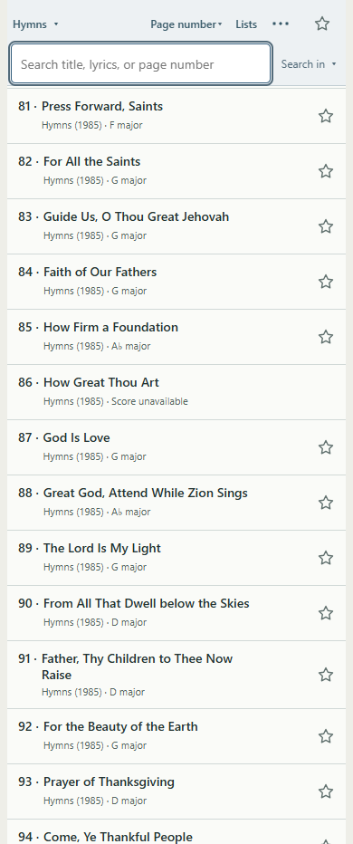
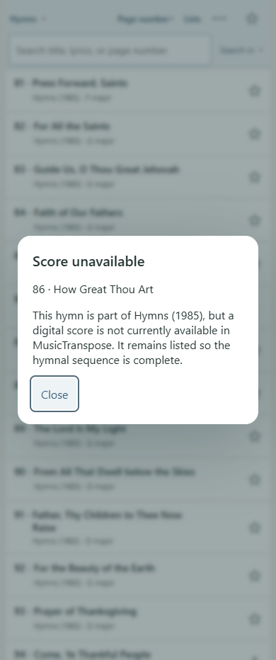
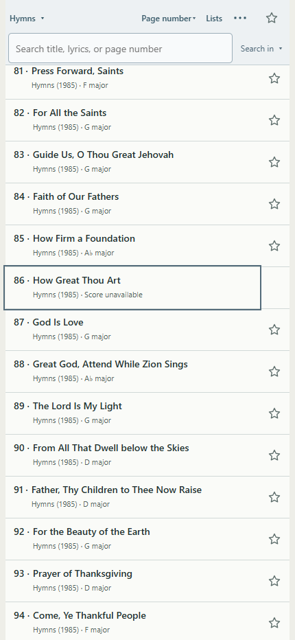
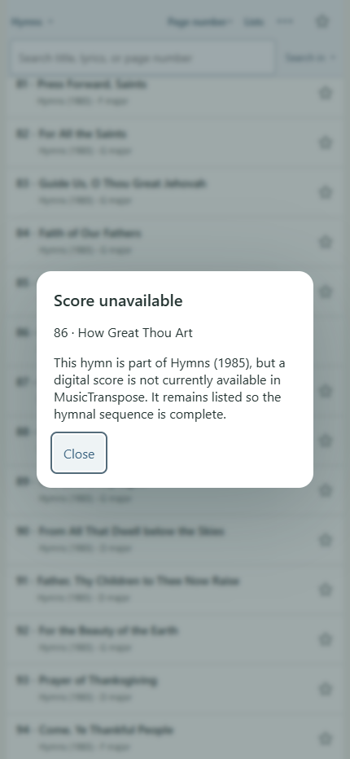
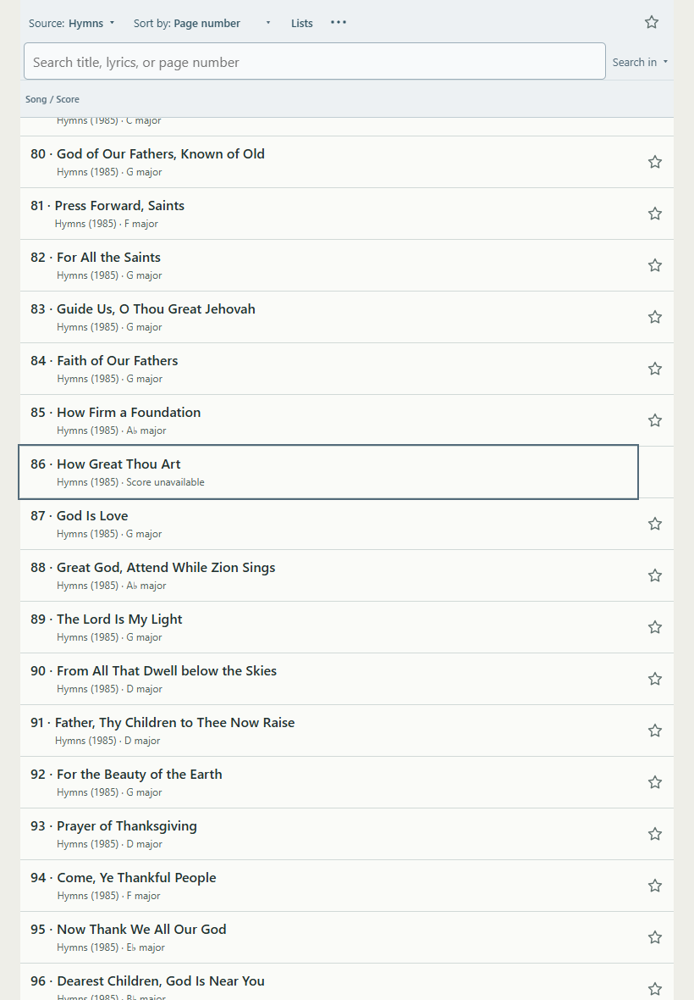
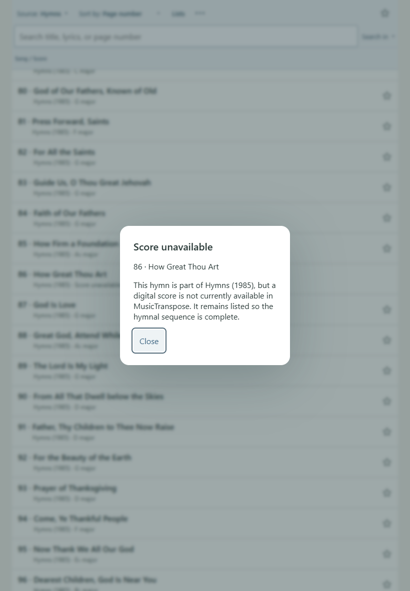
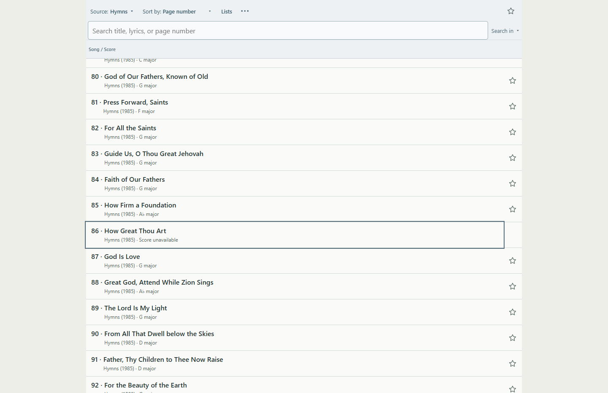
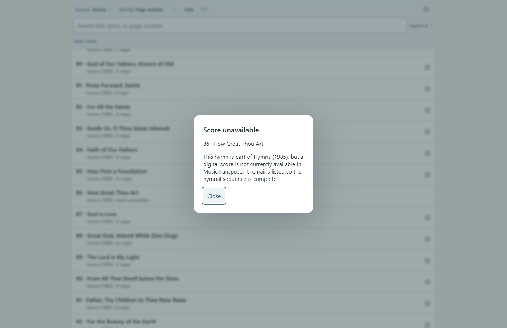

All 341 expected numbers are now accounted for: 335 structured scores, 0 PDF-only entries, 6 unavailable-but-visible entries, 0 unresolved gaps, 0 duplicate-number anomalies. This is a metadata and asset-presence audit, not a new full rendering audit.
The runtime catalog omitted #12, #54, #86, #124, #219 and #299. All six were already known in the project’s archive inventory (classification C), rather than unknown missing titles (D). No previous stable IDs existed for them.
| Number | Recovered title | Immutable catalog ID |
|---|---|---|
| 12 | ’Twas Witnessed in the Morning Sky | song-d8dfa7b4-9f81-478e-a7ad-ee6f6203c32e |
| 54 | Behold, the Mountain of the Lord | song-27a8c59a-533c-49c7-afad-38235c3dc986 |
| 86 | How Great Thou Art | song-fc881a78-59ce-46b5-bb56-a5ab0e0cf947 |
| 124 | Be Still, My Soul | song-dcef334a-5a90-4472-9041-ad8148988b89 |
| 219 | Because I Have Been Given Much | song-5e185796-f0eb-4008-96cd-02604f6d3605 |
| 299 | Children of Our Heavenly Father | song-1d10d95d-cf62-4263-912d-741f38e1b7b0 |
Commit 7854f17, scripts/import-hymnal-1985.py, reports/hymnal-1985-inventory.json and reports/hymnal-1985-full-import.md preserve all six titles. The importer’s state-C branch skipped them before adding runtime records: no native MXL, and the archived PDFs were notices rather than usable notation. That evidence supports metadata-only placeholders; no score or notice PDF has been added here. Git string/history searches found the import records, not an earlier working catalog-only dialog to restore.
New immutable song UUIDs, collection/edition/number/title metadata, availability: unavailable, availabilityReason: no-usable-score. No fake asset paths. This is separate from missing local files or unexpectedly failed asset requests. Future permitted assets should attach to the same identity and clear the unavailable flag.
Library row: 86 · How Great Thou Art
Hymns (1985) · Score unavailable
Click or keyboard activation opens a native modal with heading Score unavailable and the selected hymn identity:
This hymn is part of Hymns (1985), but a digital score is not currently available in MusicTranspose. It remains listed so the hymnal sequence is complete.
Close receives focus, Tab/Shift+Tab stays on its sole action, Escape and Close dismiss, and focus returns to the originating row. No legal reason is asserted in the user-facing notice. Existing dialog styling supplies the visible focus and 44px action.
All six participate in All Music, Hymns (1985), title/page-only searches and numerical/alphabetical sorting. The visible sequence includes 84, 85, 86, 87, 88. Playable navigation uses 84 ↔ 85 ↔ 87 ↔ 88; #86 never enters the active songSet. Previous/Next buttons remain enabled on #85 and #87. Direct loadSong calls are guarded before score state, history or asset loading changes.
Existing Favorites/Lists store song IDs, but their UI assumes playable entries. This task does not expand those workflows: catalog-only rows have no Favorite action and cannot be selected in Add songs. Existing user data is untouched. Saved navigation snapshots are filtered through the same playable predicate.
Offline manifests are byte-equivalent to baseline 8f6e317: 679 structured assets and 668 Original PDFs app-wide. The six catalog-only entries have no download paths and do not affect readiness/preparation totals. Service worker v216 precaches the two new metadata/availability modules; score-cache behavior is unchanged.
songs.js, unavailable-songs.js, score-availability.js, catalog.js, library.js, lists-view.js, app.js (entry guard only), sw.js; tests/unavailable-catalog.mjs, tests/unavailable-catalog-ui.mjs; this report, the full JSON audit and eight focused screenshots.
No score assets, restricted music/lyrics, generated harmony, phone layout, footer, pagination, score rendering, playback or extraction changes. No external score search/download was performed. Baseline: 8f6e317; release commit/deployment verification are recorded in the chat handoff.








A = structured score; B = PDF-only; C = known without usable score; D = unresolved; E = duplicate identity. Before: 335 A, six known C omitted from runtime. After:
| Number | Title | Class | Stable ID |
|---|---|---|---|
| 1 | The Morning Breaks | A | song-3f9eca82-5b22-4785-8ac8-9e7c8c34070b |
| 2 | The Spirit of God | A | song-a13c43da-0243-4019-ad08-d7be530074f5 |
| 3 | Now Let Us Rejoice | A | song-e3fab13a-2bab-4a23-8dfc-56307e1764eb |
| 4 | Truth Eternal | A | song-a1915d8e-9b64-416b-a86b-dc66796dfab0 |
| 5 | High on the Mountain Top | A | song-00898d57-b8f5-4825-8ccb-bc8db590fff4 |
| 6 | Redeemer of Israel | A | song-e1cfcf58-9d20-4563-be05-856e4e8d936a |
| 7 | Israel, Israel, God Is Calling | A | song-79a297b0-52bf-444f-ab42-1c6a0f64a68d |
| 8 | Awake and Arise | A | song-67615f0c-02aa-43e8-aeba-f033ded5a54d |
| 9 | Come, Rejoice | A | song-ace2cff9-0ce8-49f5-b05c-4aafb791c5f8 |
| 10 | Come, Sing to the Lord | A | song-0062ade2-ac69-44dc-8de7-a487aed78391 |
| 11 | What Was Witnessed in the Heavens? | A | song-49ba0aeb-f5d2-4981-935d-516c41cadbad |
| 12 | ’Twas Witnessed in the Morning Sky | C | song-d8dfa7b4-9f81-478e-a7ad-ee6f6203c32e |
| 13 | An Angel from on High | A | song-37bb3222-740c-4eaf-965a-623fe7b7f244 |
| 14 | Sweet Is the Peace the Gospel Brings | A | song-053865e1-8dbf-42ea-b258-24d82df67120 |
| 15 | I Saw a Mighty Angel Fly | A | song-ee0a436c-bd6a-40c7-b388-271645fae693 |
| 16 | What Glorious Scenes Mine Eyes Behold | A | song-bd206239-35ce-4c12-8862-8959adeb3954 |
| 17 | Awake, Ye Saints of God, Awake! | A | song-3e347547-6e88-4577-92aa-baa1e97508c3 |
| 18 | The Voice of God Again Is Heard | A | song-c2dba2c7-1ab3-4fb9-b955-f62d2174e06e |
| 19 | We Thank Thee, O God, for a Prophet | A | song-a600b262-da66-46aa-9f11-3d4fee569802 |
| 20 | God of Power, God of Right | A | song-fc9d4e1e-780d-46db-b964-4bcf8951c99a |
| 21 | Come, Listen to a Prophet’s Voice | A | song-5aba71e5-7dd3-4865-9c55-daf9181c3f01 |
| 22 | We Listen to a Prophet’s Voice | A | song-1e98ccb4-2e1f-4c52-9cd1-221913b8406b |
| 23 | We Ever Pray for Thee | A | song-30840d58-5d17-4bd8-933d-c28b91f4671e |
| 24 | God Bless Our Prophet Dear | A | song-8923c903-61e1-44fe-b027-ec2f9ad4e53c |
| 25 | Now We’ll Sing with One Accord | A | song-2d106db3-f58f-4686-a612-650514fafc20 |
| 26 | Joseph Smith’s First Prayer | A | song-4dcc79a0-8d67-4ac6-913b-370e8e8c4f9c |
| 27 | Praise to the Man | A | song-0244093d-d300-481a-bd08-b42e9641de47 |
| 28 | Saints, Behold How Great Jehovah | A | song-31031672-e61c-46ca-9c09-758f395b3ad3 |
| 29 | A Poor Wayfaring Man of Grief | A | song-ddbda143-e5df-412f-9a3d-58b91c576b1e |
| 30 | Come, Come, Ye Saints | A | song-9260b8f2-70a4-4755-9ab9-cf51a16c9cb6 |
| 31 | O God, Our Help in Ages Past | A | song-be4dabe1-259d-45e1-9cfc-0a3a182d707c |
| 32 | The Happy Day at Last Has Come | A | song-cbd1bb83-a645-46fe-aa1b-e36954956a2b |
| 33 | Our Mountain Home So Dear | A | song-c852eacf-b85c-4778-97b8-d146fe7f34a8 |
| 34 | O Ye Mountains High | A | song-f76df380-7901-4f21-bf86-a6b36a10a8e8 |
| 35 | For the Strength of the Hills | A | song-cee5b409-48b4-42f6-be30-8f377c1cc9d0 |
| 36 | They, the Builders of the Nation | A | song-a6ca356e-b247-4919-a00a-1b3d10e9970e |
| 37 | The Wintry Day, Descending to Its Close | A | song-9ff39fb5-5f6d-46cf-bfc6-78c782cc205f |
| 38 | Come, All Ye Saints of Zion | A | song-3058c978-9bad-4430-b0d3-543942db62b1 |
| 39 | O Saints of Zion | A | song-83805d97-c626-4ce1-8381-0f449ebd96d6 |
| 40 | Arise, O Glorious Zion | A | song-c69c52a5-22e9-48fc-8cb4-456926d98e3f |
| 41 | Let Zion in Her Beauty Rise | A | song-3a21a9c9-9fcc-4f90-8f62-3c29c6475940 |
| 42 | Hail to the Brightness of Zion’s Glad Morning! | A | song-d3736eb5-55f8-4103-94fb-e08850bc669b |
| 43 | Zion Stands with Hills Surrounded | A | song-cc756c07-4000-4b4c-bc2e-18915ff8d8f9 |
| 44 | Beautiful Zion, Built Above | A | song-59d1bcf5-e33e-4285-9fee-8a5e1bf3f283 |
| 45 | Lead Me into Life Eternal | A | song-fdf2b901-7ffb-4a7c-8394-43fd5ebea900 |
| 46 | Glorious Things of Thee Are Spoken | A | song-78c0fc15-9524-4949-bcdc-fdd85578e169 |
| 47 | We Will Sing of Zion | A | song-feb0636c-31af-4d69-873c-6db4bcb3e402 |
| 48 | Glorious Things Are Sung of Zion | A | song-8c6e1e3e-f81a-4480-aa88-ad23c54b3567 |
| 49 | Adam-ondi-Ahman | A | song-227dc125-afcd-4640-b3e7-5cfbe54dbcf7 |
| 50 | Come, Thou Glorious Day of Promise | A | song-94f3ae20-5262-4fae-9a1a-a1fd5117fcec |
| 51 | Sons of Michael, He Approaches | A | song-f044f99a-89d3-4e15-8b75-417be0ba3729 |
| 52 | The Day Dawn Is Breaking | A | song-3bf93f00-922d-488b-9a10-9af10ffefdac |
| 53 | Let Earth’s Inhabitants Rejoice | A | song-304bfc2f-cdb8-4ab3-901f-d051217fca89 |
| 54 | Behold, the Mountain of the Lord | C | song-27a8c59a-533c-49c7-afad-38235c3dc986 |
| 55 | Lo, the Mighty God Appearing! | A | song-14c4606f-00f7-4fac-80c9-33c49d5a945c |
| 56 | Softly Beams the Sacred Dawning | A | song-0f33c621-9f0e-4bf3-9a91-65996d45de52 |
| 57 | We’re Not Ashamed to Own Our Lord | A | song-76edff04-df27-47ec-b40a-4ccab30bbdcb |
| 58 | Come, Ye Children of the Lord | A | song-1c58db63-7ae0-4300-b271-9c472224d5cf |
| 59 | Come, O Thou King of Kings | A | song-7a1eae9e-0913-4af9-bd9f-b2ae6615b197 |
| 60 | Battle Hymn of the Republic | A | song-f1f1c444-22ec-4703-a7ee-1f04d2bda224 |
| 61 | Raise Your Voices to the Lord | A | song-35c1d33c-fa24-4097-8b5f-dc9769654270 |
| 62 | All Creatures of Our God and King | A | song-93dfb488-c85f-4028-ab09-127470312f80 |
| 63 | Great King of Heaven | A | song-d4882737-c8ee-4d56-a9de-03285da10a68 |
| 64 | On This Day of Joy and Gladness | A | song-4bdf04d7-47b9-469b-a26d-28524ab2a778 |
| 65 | Come, All Ye Saints Who Dwell on Earth | A | song-d9056915-c14f-4fdb-bc3c-0fa5208a4c64 |
| 66 | Rejoice, the Lord Is King! | A | song-0d512ac4-4118-4073-8ecf-fd57d437634e |
| 67 | Glory to God on High | A | song-0dabe0c3-ecb6-4812-ac00-51320858adf8 |
| 68 | A Mighty Fortress Is Our God | A | song-e3220a8e-7231-495a-9ad3-c8bf0d803897 |
| 69 | All Glory, Laud, and Honor | A | song-fd2626cc-7c9c-40ea-9ce1-abb1ac15ae22 |
| 70 | Sing Praise to Him | A | song-95273aa4-6219-4608-a682-8db1ff47c3eb |
| 71 | With Songs of Praise | A | song-1b47066a-3316-48d8-8645-579371be37ca |
| 72 | Praise to the Lord, the Almighty | A | song-074060f8-de63-439b-97aa-3532a95ac2ff |
| 73 | Praise the Lord with Heart and Voice | A | song-3a815a03-f756-4846-893b-426459b114e1 |
| 74 | Praise Ye the Lord | A | song-b0df93f6-45fa-4f22-92e0-8b3beec028eb |
| 75 | In Hymns of Praise | A | song-795bf192-9729-4769-b182-bd606a04d277 |
| 76 | God of Our Fathers, We Come unto Thee | A | song-5260cbb6-62fc-472a-ba72-3b2e8ae28391 |
| 77 | Great Is the Lord | A | song-c2a355f3-f48b-4485-beb1-d93fc6c9f846 |
| 78 | God of Our Fathers, Whose Almighty Hand | A | song-6a585b0f-afc8-48e1-9f15-8579d1e09eed |
| 79 | With All the Power of Heart and Tongue | A | song-4b4527e2-f878-4fc0-ab9a-543ec3fd2b54 |
| 80 | God of Our Fathers, Known of Old | A | song-0b9ad58e-c56e-4c3d-8632-05a2f30a6dbf |
| 81 | Press Forward, Saints | A | song-61e6163a-dc48-4728-8207-4870522f144b |
| 82 | For All the Saints | A | song-99149a84-9950-4fc0-b34d-dd0bae0166c3 |
| 83 | Guide Us, O Thou Great Jehovah | A | song-85824e7f-8c1e-4876-9f3f-b06143e42248 |
| 84 | Faith of Our Fathers | A | song-9f2a063d-1180-4f63-a580-0227046d15cf |
| 85 | How Firm a Foundation | A | song-41d7a6e2-b770-49c9-b48b-82a070d520cc |
| 86 | How Great Thou Art | C | song-fc881a78-59ce-46b5-bb56-a5ab0e0cf947 |
| 87 | God Is Love | A | song-275ccb42-e6a0-4cb7-b1ee-2fcf952ee1de |
| 88 | Great God, Attend While Zion Sings | A | song-f2764211-707a-409a-bf14-d0a4c5488535 |
| 89 | The Lord Is My Light | A | song-8b09b308-9dc7-4948-98a9-87174a580235 |
| 90 | From All That Dwell below the Skies | A | song-bd2235e9-00fe-477d-a1f3-3c2c6b2fa4e5 |
| 91 | Father, Thy Children to Thee Now Raise | A | song-a3074538-3191-4f39-b4fe-7c3f43deb06f |
| 92 | For the Beauty of the Earth | A | song-deb16777-4998-4df2-af47-ebe4dd8b0c1f |
| 93 | Prayer of Thanksgiving | A | song-90466a8a-1acc-4bc1-b16c-04a15b36fb08 |
| 94 | Come, Ye Thankful People | A | song-20e5012e-d35a-4100-9d85-b8aca2256aca |
| 95 | Now Thank We All Our God | A | song-89004405-751f-44e8-9ec7-4c5a2ff9cee1 |
| 96 | Dearest Children, God Is Near You | A | song-44d6f635-2cbd-42bb-8de9-0e8844e83b92 |
| 97 | Lead, Kindly Light | A | song-81729459-26a5-4009-be58-ad263d0a35ad |
| 98 | I Need Thee Every Hour | A | song-2aff8662-2b9d-4a85-a4dd-84c4adc0d54c |
| 99 | Nearer, Dear Savior, to Thee | A | song-6f07e565-f3c0-4bb4-a033-59e8d9811e12 |
| 100 | Nearer, My God, to Thee | A | song-00dbf08d-281a-4a99-9a9a-77815f9d9d14 |
| 101 | Guide Me to Thee | A | song-2e7ec547-be97-4ce4-b46c-b7abb64cd311 |
| 102 | Jesus, Lover of My Soul | A | song-f39c600b-865c-4ca4-8a56-b25c0c8db336 |
| 103 | Precious Savior, Dear Redeemer | A | song-d9f06daa-b5ab-4ea1-9fd1-00ff11fb9083 |
| 104 | Jesus, Savior, Pilot Me | A | song-cdb2aac0-b3cf-4816-8399-f0e567237140 |
| 105 | Master, the Tempest Is Raging | A | song-3c0fdae2-06a6-4b1e-af91-18b4b51c9d38 |
| 106 | God Speed the Right | A | song-a4cd3587-5ed6-49b3-8997-511f3320a724 |
| 107 | Lord, Accept Our True Devotion | A | song-df3fbc2c-aa62-47e9-9479-97806f1da60f |
| 108 | The Lord Is My Shepherd | A | song-dea11113-d74a-48fb-a683-976303a87d10 |
| 109 | The Lord My Pasture Will Prepare | A | song-16e918cc-7f28-4245-94a0-7b3c6130289a |
| 110 | Cast Thy Burden upon the Lord | A | song-07309f2c-ff75-4f28-8132-0a3820284b8a |
| 111 | Rock of Ages | A | song-3e6851de-71d8-4c7f-b8a6-2d4430ab14d0 |
| 112 | Savior, Redeemer of My Soul | A | song-4a03fe87-60f1-4aff-a6f1-1cbb2134dc8f |
| 113 | Our Savior’s Love | A | song-d74a3637-cbf2-49e6-910e-c58b6a3ebda5 |
| 114 | Come unto Him | A | song-25f1610b-9af9-4a10-a248-9eeb0dddd728 |
| 115 | Come, Ye Disconsolate | A | song-f16ad9c5-0f1c-4829-a588-69a6898ac86b |
| 116 | Come, Follow Me | A | song-f603bb13-3881-43c0-9d98-333568a2e757 |
| 117 | Come unto Jesus | A | song-6b2e4b0d-14ab-45b8-88f2-2920e489aad8 |
| 118 | Ye Simple Souls Who Stray | A | song-44c2d21e-c24c-4e9e-8eef-bd4336712d25 |
| 119 | Come, We That Love the Lord | A | song-ef087bb5-0a02-4298-90c7-b4c96c88ab85 |
| 120 | Lean on My Ample Arm | A | song-18bca7ba-c893-4ab3-b780-988a271b95f4 |
| 121 | I’m a Pilgrim, I’m a Stranger | A | song-3537dbd2-afda-48ea-a9a8-5f647b712ad5 |
| 122 | Though Deepening Trials | A | song-af8cc3c9-0ae1-4878-9a60-9c5a37a19918 |
| 123 | Oh, May My Soul Commune with Thee | A | song-1cc93307-4486-4c99-b32b-013eaddf8d79 |
| 124 | Be Still, My Soul | C | song-dcef334a-5a90-4472-9041-ad8148988b89 |
| 125 | How Gentle God’s Commands | A | song-b5834e14-4342-46b2-a2d7-58babed1c682 |
| 126 | How Long, O Lord Most Holy and True | A | song-6084e096-1426-4424-8793-93148c0759fe |
| 127 | Does the Journey Seem Long? | A | song-1e4ccb84-3de4-4ed7-9157-e61ef70e76fb |
| 128 | When Faith Endures | A | song-58520545-1525-4e0f-abb1-bf74e9f97863 |
| 129 | Where Can I Turn for Peace? | A | song-919219ad-9b5c-4d45-a0c4-36e043b737c8 |
| 130 | Be Thou Humble | A | song-5c566362-6161-406e-aa61-c9f115e778bc |
| 131 | More Holiness Give Me | A | song-0db210da-7549-4377-adf7-9cf11bdd8356 |
| 132 | God Is in His Holy Temple | A | song-3718f056-0eeb-459e-b03b-9455f7165edd |
| 133 | Father in Heaven | A | song-ff10598c-cbc9-4d5f-8d8f-b2ec7a12bffb |
| 134 | I Believe in Christ | A | song-382cbc91-e68b-4945-b1c2-3ade4f9aeacf |
| 135 | My Redeemer Lives | A | song-799da58b-def1-4487-9d63-88453408fb44 |
| 136 | I Know That My Redeemer Lives | A | song-14959cda-04e8-4b5c-aec4-f52c1d275702 |
| 137 | Testimony | A | song-136ed484-94e2-4484-8ad2-9f5710dc74ce |
| 138 | Bless Our Fast, We Pray | A | song-15580063-2fdb-4449-a5fc-48b0d74d84fa |
| 139 | In Fasting We Approach Thee | A | song-d825ccb7-4b12-46c1-adf7-827b256fcb8b |
| 140 | Did You Think to Pray? | A | song-f95d20b9-85e1-4867-baf4-de8f61e9ad24 |
| 141 | Jesus, the Very Thought of Thee | A | song-bed74172-dcd0-452f-ad71-f50bed6396df |
| 142 | Sweet Hour of Prayer | A | song-8f14b472-7feb-4ab0-8bc3-73587e9009df |
| 143 | Let the Holy Spirit Guide | A | song-61fd2221-1cdd-4463-a6e1-8954882f29b6 |
| 144 | Secret Prayer | A | song-871573d0-1157-4bec-9ab4-c4155f9ba449 |
| 145 | Prayer Is the Soul’s Sincere Desire | A | song-2a8dce03-f1ae-4c0e-9557-9ce18a86d1e4 |
| 146 | Gently Raise the Sacred Strain | A | song-10666d31-f264-4151-a6b6-25360274b1b7 |
| 147 | Sweet Is the Work | A | song-996b318c-6edc-469d-9106-400442e2bb87 |
| 148 | Sabbath Day | A | song-407bf084-d7d4-4242-b2d4-8c1130f34da9 |
| 149 | As the Dew from Heaven Distilling | A | song-0e7388b8-b436-489b-8160-ef52d4e30d09 |
| 150 | O Thou Kind and Gracious Father | A | song-09d85576-1d34-4fc7-941a-716c41442cc3 |
| 151 | We Meet, Dear Lord | A | song-f3cd8413-290b-4feb-b2df-d1e39df4ec91 |
| 152 | God Be with You Till We Meet Again | A | song-e8873d16-0ab4-40cd-9dd6-4f0df8e66e5e |
| 153 | Lord, We Ask Thee Ere We Part | A | song-45cf2148-72b0-45c1-8d7c-708f6f160952 |
| 154 | Father, This Hour Has Been One of Joy | A | song-eff4a86d-ff65-4bcf-b614-71e2c31269b9 |
| 155 | We Have Partaken of Thy Love | A | song-55febf0b-26b2-4327-a640-a6401b65ce62 |
| 156 | Sing We Now at Parting | A | song-5aa7afaf-7501-4906-be60-d74529e814c9 |
| 157 | Thy Spirit, Lord, Has Stirred Our Souls | A | song-3b0b2c47-c196-46d5-ac54-204ac0da91e3 |
| 158 | Before Thee, Lord, I Bow My Head | A | song-60037a98-4847-429d-ae66-8296e5472aa0 |
| 159 | Now the Day Is Over | A | song-85ec02ed-7df1-425c-a214-483639e78fad |
| 160 | Softly Now the Light of Day | A | song-b2cbfc3e-9a20-48e6-b072-88496c5c932c |
| 161 | The Lord Be with Us | A | song-c6810178-0f12-4db6-833a-fd402902f3c5 |
| 162 | Lord, We Come before Thee Now | A | song-afa8b3be-7502-4a2e-a593-9c931366e7d8 |
| 163 | Lord, Dismiss Us with Thy Blessing | A | song-b8d1b6eb-1557-4028-bfeb-26de1bf91d81 |
| 164 | Great God, to Thee My Evening Song | A | song-43d20025-1500-4661-ba0d-15a2a3b6b190 |
| 165 | Abide with Me; ’Tis Eventide | A | song-a7939082-9b28-46e5-9738-b91a94d606de |
| 166 | Abide with Me! | A | song-082dec32-d317-42cd-86da-a44af8647d83 |
| 167 | Come, Let Us Sing an Evening Hymn | A | song-28aa9c01-91bf-42e3-a0e7-84ca29d72bd5 |
| 168 | As the Shadows Fall | A | song-67932407-2f82-46a3-80d1-94a4b873e3a2 |
| 169 | As Now We Take the Sacrament | A | song-9b6801af-10d6-4840-876a-56b8c52d2a8e |
| 170 | God, Our Father, Hear Us Pray | A | song-a47ece80-fd65-440d-be9b-7be355ed59f2 |
| 171 | With Humble Heart | A | song-59e36b81-bc02-4475-b6bf-0bea9ee96e99 |
| 172 | In Humility, Our Savior | A | song-b6f97276-963c-40de-928a-4eb66cccc694 |
| 173 | While of These Emblems We Partake | A | song-eb2f61bb-b8f9-40e9-b545-daf6f477b72b |
| 174 | While of These Emblems We Partake | A | song-20acbafe-d231-40a7-b91e-4f9a04640393 |
| 175 | O God, the Eternal Father | A | song-9744d4ba-2243-422c-91c6-b5788b2c9c56 |
| 176 | ’Tis Sweet to Sing the Matchless Love | A | song-67e562b7-551a-4a3c-8361-1fce2441d0dd |
| 177 | ’Tis Sweet to Sing the Matchless Love | A | song-ee57fc34-e922-4573-a2d5-cfe1410ef492 |
| 178 | O Lord of Hosts | A | song-d589ffd1-b19e-4b30-94e1-331895368ab2 |
| 179 | Again, Our Dear Redeeming Lord | A | song-5ef41a29-c662-4baf-9885-b4b7cbfe185d |
| 180 | Father in Heaven, We Do Believe | A | song-7960a3a2-6bbe-434a-9f8f-b9e058ea6bfe |
| 181 | Jesus of Nazareth, Savior and King | A | song-7f35443e-000c-4aa3-ad43-bd434d8a1599 |
| 182 | We’ll Sing All Hail to Jesus’ Name | A | song-e7d28bd6-859b-47ed-9404-1b7980d69159 |
| 183 | In Remembrance of Thy Suffering | A | song-b1c61173-9938-4245-a727-35ed8454815f |
| 184 | Upon the Cross of Calvary | A | song-5430f91e-00a4-4627-abc7-ec95f70f2329 |
| 185 | Reverently and Meekly Now | A | song-1ec6da3b-caa0-44a2-95e4-ec033a740937 |
| 186 | Again We Meet around the Board | A | song-3dd5aff4-acfa-4f64-8caf-584773695f57 |
| 187 | God Loved Us, So He Sent His Son | A | song-0b39caae-1bee-4933-8309-1a366f120ea0 |
| 188 | Thy Will, O Lord, Be Done | A | song-5a2b2f3b-b58d-47a7-a999-a30b8dd6db59 |
| 189 | O Thou, Before the World Began | A | song-5c2ab76f-d95b-47b2-8d43-b13cf1731b4c |
| 190 | In Memory of the Crucified | A | song-44d1fc5b-6cca-4c61-8cad-698f05accbed |
| 191 | Behold the Great Redeemer Die | A | song-d62fc11a-4646-4563-a34b-896ed923a44b |
| 192 | He Died! The Great Redeemer Died | A | song-6d5c2f83-8c10-45a1-b6bd-51d1ea3be044 |
| 193 | I Stand All Amazed | A | song-a66f2976-c2a3-4edd-9651-fa5e829b053a |
| 194 | There Is a Green Hill Far Away | A | song-f76de71c-a9f3-4b94-81f5-7e55ff447f94 |
| 195 | How Great the Wisdom and the Love | A | song-9c6985e6-c862-404c-8ac4-f90524a797de |
| 196 | Jesus, Once of Humble Birth | A | song-d112df90-a0be-48a5-9310-75d6796aca61 |
| 197 | O Savior, Thou Who Wearest a Crown | A | song-aba725bb-369b-4210-9cee-f0f762f94a7a |
| 198 | That Easter Morn | A | song-98cbb293-33a5-4fcd-9fd9-4dc668ff7bb3 |
| 199 | He Is Risen! | A | song-5e5bc70a-2e08-4411-999d-628bf6079d88 |
| 200 | Christ the Lord Is Risen Today | A | song-cb87dc92-579f-42f4-b83f-03ccaf28e602 |
| 201 | Joy to the World | A | song-b84d63a6-cb12-4f44-a1b5-c83641a234f9 |
| 202 | Oh, Come, All Ye Faithful | A | faithful |
| 203 | Angels We Have Heard on High | A | song-c8c15b83-e038-4dc7-9901-c015de754fb4 |
| 204 | Silent Night | A | silent-night |
| 205 | Once in Royal David’s City | A | song-e0466d19-0b02-43a0-a730-6bbb9bf06ed5 |
| 206 | Away in a Manger | A | song-fafcb319-245b-4305-b2f1-f97fad331d5e |
| 207 | It Came upon the Midnight Clear | A | song-18eaf9c0-8eb0-47e8-87d0-1e1e632e47fc |
| 208 | O Little Town of Bethlehem | A | song-971ceab4-9411-4127-8118-db8dd12e1816 |
| 209 | Hark! The Herald Angels Sing | A | song-53c57be6-2733-45c7-94ad-773835a4fd19 |
| 210 | With Wondering Awe | A | song-10325904-fe2e-47d7-8693-95dc83af7702 |
| 211 | While Shepherds Watched Their Flocks | A | song-e9b41466-3dfd-4d38-8c29-7723246ec090 |
| 212 | Far, Far Away on Judea’s Plains | A | song-9be03820-2e2a-453e-9270-2138bf79d9c2 |
| 213 | The First Noel | A | song-8aaafadd-0290-4b8f-aa76-a7b167782212 |
| 214 | I Heard the Bells on Christmas Day | A | song-0cb749cd-a76b-4468-874d-5db8248e25ec |
| 215 | Ring Out, Wild Bells | A | song-a5d8ad72-20f6-4adb-86ad-1ca300b93804 |
| 216 | We Are Sowing | A | song-edae2ad8-a4c0-4132-935c-8895ee40b381 |
| 217 | Come, Let Us Anew | A | song-f29c2c26-210a-4810-86c9-16b1f7d52118 |
| 218 | We Give Thee But Thine Own | A | song-851c75bb-54b3-4b76-b678-38c856d0d879 |
| 219 | Because I Have Been Given Much | C | song-5e185796-f0eb-4008-96cd-02604f6d3605 |
| 220 | Lord, I Would Follow Thee | A | song-2af92b23-6596-4623-a644-d480cb1a89fa |
| 221 | Dear to the Heart of the Shepherd | A | song-c9add785-5429-47ec-bf7d-afc5581a87d6 |
| 222 | Hear Thou Our Hymn, O Lord | A | song-b82e980c-4b96-42bd-813a-8e700ea468f5 |
| 223 | Have I Done Any Good? | A | song-138d4697-d2d9-414a-885c-82b760f1f371 |
| 224 | I Have Work Enough to Do | A | song-7bd903aa-341b-4d81-bc43-a16424ab1800 |
| 225 | We Are Marching On to Glory | A | song-51e9ee33-e0e9-4f34-8b76-7902ca66e36f |
| 226 | Improve the Shining Moments | A | song-d0fcb69f-564a-4f27-951d-c08fc1a468e9 |
| 227 | There Is Sunshine in My Soul Today | A | song-6b45d05c-f74c-4d69-a12a-40069311541a |
| 228 | You Can Make the Pathway Bright | A | song-54db47df-6f16-441c-ac53-df09cfdb294c |
| 229 | Today, While the Sun Shines | A | song-22197efd-635b-4f62-b650-354c6c281624 |
| 230 | Scatter Sunshine | A | song-dac6f94b-6a48-40de-993c-82bb543bf96d |
| 231 | Father, Cheer Our Souls Tonight | A | song-88bb06ac-53f3-47c3-808d-8a8746388aeb |
| 232 | Let Us Oft Speak Kind Words | A | song-37a6936e-9bb3-4081-b2e4-996ee9121150 |
| 233 | Nay, Speak No Ill | A | song-3ddb41e2-934a-401e-bedf-d04cb65f51cb |
| 234 | Jesus, Mighty King in Zion | A | song-fdf856f8-4499-4b62-aff7-a98813ac9acc |
| 235 | Should You Feel Inclined to Censure | A | song-7be9095f-771f-4363-b683-c55d9e72292d |
| 236 | Lord, Accept into Thy Kingdom | A | song-7dfcca8f-4639-438f-b2be-65c4e53cd8d1 |
| 237 | Do What Is Right | A | song-1a7e3e3b-47c5-4986-963e-4bc8b80cdf9a |
| 238 | Behold Thy Sons and Daughters, Lord | A | song-7687c95c-ed20-430a-b80d-014b17427810 |
| 239 | Choose the Right | A | song-05f40854-1219-4052-8766-6a3a6935146e |
| 240 | Know This, That Every Soul Is Free | A | song-e545829c-78bd-4c90-9a14-c706bbc0ed4b |
| 241 | Count Your Blessings | A | song-2afc0981-e463-470e-8cab-632d0b0b57e6 |
| 242 | Praise God, from Whom All Blessings Flow | A | song-d5aeab67-a5b8-40e7-8770-9fb1d42000e5 |
| 243 | Let Us All Press On | A | song-47443947-36d1-4509-8639-866143aa7468 |
| 244 | Come Along, Come Along | A | song-3c37c435-a330-47e2-a169-d83522595cc0 |
| 245 | This House We Dedicate to Thee | A | song-77e2a9c5-defe-402d-947f-13ccb518d875 |
| 246 | Onward, Christian Soldiers | A | song-95e908ac-a3bd-4000-a45b-6ee588196bdf |
| 247 | We Love Thy House, O God | A | song-594050fa-1cd4-4509-8c3a-54dc9cf5de24 |
| 248 | Up, Awake, Ye Defenders of Zion | A | song-b40f33d6-d5af-46c8-95c3-e1917a951460 |
| 249 | Called to Serve | A | song-d92bb26c-6a08-4beb-a917-b787102678da |
| 250 | We Are All Enlisted | A | song-6865def7-4ef7-4fac-ad57-27e468446e98 |
| 251 | Behold! A Royal Army | A | song-630410cd-be22-4d5a-9445-0568b51e397c |
| 252 | Put Your Shoulder to the Wheel | A | song-ed92d57f-c9cb-402d-852c-f77ae768aa3d |
| 253 | Like Ten Thousand Legions Marching | A | song-bbb8e898-903e-41ed-98d0-3e7cd5ff33fe |
| 254 | True to the Faith | A | song-c25734b4-ba49-4c88-ba90-4927ede707c4 |
| 255 | Carry On | A | song-29ddec61-4020-4ab9-8400-7cc2acf115e4 |
| 256 | As Zion’s Youth in Latter Days | A | song-4a9720ac-e510-495e-806e-39e851843c73 |
| 257 | Rejoice! A Glorious Sound Is Heard | A | song-550fb578-d377-4dc9-bb00-9e9639a49c71 |
| 258 | O Thou Rock of Our Salvation | A | song-c2019d89-bd53-4f00-a653-d863b711aa15 |
| 259 | Hope of Israel | A | song-9e9db675-111d-48ee-91ed-23dd17b35d0d |
| 260 | Who’s on the Lord’s Side? | A | song-af8d66bd-9206-4235-934d-6070c186050a |
| 261 | Thy Servants Are Prepared | A | song-da061743-f23c-4f29-8abe-9d2665cc28d4 |
| 262 | Go, Ye Messengers of Glory | A | song-5da6b83a-d1e1-452a-a50d-950d320260b2 |
| 263 | Go Forth with Faith | A | song-52bb81df-191d-4f69-9e80-6c003b5260cd |
| 264 | Hark, All Ye Nations! | A | song-2107fef0-d74a-48c5-8d7e-6c6ea243eafb |
| 265 | Arise, O God, and Shine | A | song-c6123147-4784-40ce-b463-c4282a445eb9 |
| 266 | The Time Is Far Spent | A | song-f2965762-2cb1-43a5-b5c3-b5395e5de292 |
| 267 | How Wondrous and Great | A | song-5847f4b8-6bab-4477-abb9-048d4bf80fdb |
| 268 | Come, All Whose Souls Are Lighted | A | song-e4ed1590-1b82-45da-b562-ffad9b124282 |
| 269 | Jehovah, Lord of Heaven and Earth | A | song-7c922983-6513-4e23-9177-87fed5d1c786 |
| 270 | I’ll Go Where You Want Me to Go | A | song-5171114c-7b99-40f8-9040-5186973263b3 |
| 271 | Oh, Holy Words of Truth and Love | A | song-af2e3f69-c0f9-4f65-9333-d8aca67ebdfc |
| 272 | Oh Say, What Is Truth? | A | song-c6a64145-1133-4688-8009-e1619839194d |
| 273 | Truth Reflects upon Our Senses | A | song-bfb6a184-1d9c-4e05-bc9e-71efae11eea1 |
| 274 | The Iron Rod | A | song-ebb6360b-24c1-4990-aeb6-c7ebd69b3ef0 |
| 275 | Men Are That They Might Have Joy | A | song-ca897b7e-edc4-4afb-b834-b86f1cfb960f |
| 276 | Come Away to the Sunday School | A | song-e8477f1f-83e0-4af5-826a-a3ad4a1079d6 |
| 277 | As I Search the Holy Scriptures | A | song-4597aa28-e4f1-4060-8f51-e8374865a3ef |
| 278 | Thanks for the Sabbath School | A | song-127eea0f-8f0f-436a-996d-e0d381ad173f |
| 279 | Thy Holy Word | A | song-6ac17760-c92c-4964-a01a-c9a7a26521c6 |
| 280 | Welcome, Welcome, Sabbath Morning | A | song-00c582e3-baa8-410b-940c-9fd52aa166a9 |
| 281 | Help Me Teach with Inspiration | A | song-27f07185-eeeb-4ab8-a3d7-a1d3d9b923d7 |
| 282 | We Meet Again in Sabbath School | A | song-8182bd34-06bc-4948-8549-1fa8c8ae7ced |
| 283 | The Glorious Gospel Light Has Shone | A | song-07d3c84d-19f0-4fdd-8473-e5240ce09e9b |
| 284 | If You Could Hie to Kolob | A | song-5f538e3b-37de-4a1b-bbd0-44a0f13e25da |
| 285 | God Moves in a Mysterious Way | A | song-3a137ead-fbe7-46fb-b00d-74fcb4473424 |
| 286 | Oh, What Songs of the Heart | A | song-9658fc70-34ec-41a0-97b2-06bd052d842f |
| 287 | Rise, Ye Saints, and Temples Enter | A | song-867279ef-afe3-493f-a894-09131e17fb12 |
| 288 | How Beautiful Thy Temples, Lord | A | song-7193f145-5d8c-4e0b-9963-2dec42ce3237 |
| 289 | Holy Temples on Mount Zion | A | song-46c851eb-32c2-49d7-9b0d-3276df8c83e2 |
| 290 | Rejoice, Ye Saints of Latter Days | A | song-696b206a-44c1-4d87-9619-29b0c8613c7a |
| 291 | Turn Your Hearts | A | song-54558001-8653-4c01-bbd9-6f4e2341a8ea |
| 292 | O My Father | A | song-b61a15f7-c918-4320-9a79-03eef62b9f62 |
| 293 | Each Life That Touches Ours for Good | A | song-0ee49c88-a255-46aa-846b-eca80c0d1056 |
| 294 | Love at Home | A | song-89b0379c-c1f8-41dd-a837-77870bcb3bd7 |
| 295 | O Love That Glorifies the Son | A | song-f119e442-cf72-43d4-8621-d208ec445397 |
| 296 | Our Father, by Whose Name | A | song-8aafccd0-12a9-4d8a-a2a2-15810fabb0a4 |
| 297 | From Homes of Saints Glad Songs Arise | A | song-5c596b17-dfb4-4993-9557-f92edda38b49 |
| 298 | Home Can Be a Heaven on Earth | A | song-76322083-0fe9-410e-aa73-e16acf321ca9 |
| 299 | Children of Our Heavenly Father | C | song-1d10d95d-cf62-4263-912d-741f38e1b7b0 |
| 300 | Families Can Be Together Forever | A | song-47813d41-1317-4ca0-9a32-a520b47c97d2 |
| 301 | I Am a Child of God | A | song-7076bf3f-727e-4280-90f1-60faf9796937 |
| 302 | I Know My Father Lives | A | song-094d3a6c-43e1-497f-80c3-24cb36f444de |
| 303 | Keep the Commandments | A | song-4a701cbd-1db3-463c-babd-4e2714b55713 |
| 304 | Teach Me to Walk in the Light | A | song-be6f6e17-ff47-442d-b2cf-cddfe767da67 |
| 305 | The Light Divine | A | song-7ffc2a79-7ac6-4a84-ace8-ff99f47faa00 |
| 306 | God’s Daily Care | A | song-3c43fab0-0fef-4e0f-a4d7-5f0eec562b92 |
| 307 | In Our Lovely Deseret | A | song-af85e05e-8681-406e-a412-22338e4fd595 |
| 308 | Love One Another | A | song-f182d927-0ec9-4aaa-8af8-b49268cd96b0 |
| 309 | As Sisters in Zion | A | song-74bac8a9-6455-4706-8fc8-2be43e51eab3 |
| 310 | A Key Was Turned in Latter Days | A | song-c0a8cbd7-2188-43d3-9840-19faa722e6ca |
| 311 | We Meet Again as Sisters | A | song-89b00dd7-73b9-42f3-9065-e743962094d2 |
| 312 | We Ever Pray for Thee | A | song-7e7e0440-5d08-4272-8abc-1a3c04020bc6 |
| 313 | God Is Love | A | song-5aa8b88e-ca6a-47f2-ac73-a673f5f2bb2f |
| 314 | How Gentle God’s Commands | A | song-158c3860-bb73-4e53-bc69-1ee81afe1a2b |
| 315 | Jesus, the Very Thought of Thee | A | song-f2a1cdf0-3858-4822-a2a1-8a4d69e96aae |
| 316 | The Lord Is My Shepherd | A | song-d4565aed-b6f7-4f72-9b71-a64bb29cc483 |
| 317 | Sweet Is the Work | A | song-4276e01d-13dc-41dd-ad96-5ad2ba4aa2ea |
| 318 | Love at Home | A | song-91e16b0e-3921-430f-8e14-fa25fffb72b1 |
| 319 | Ye Elders of Israel | A | song-7f407f0f-8d10-4bc4-9d74-03806c7e0969 |
| 320 | The Priesthood of Our Lord | A | song-c7318efd-a15a-401b-ad22-ed8d1e6f4b56 |
| 321 | Ye Who Are Called to Labor | A | song-d5b6a45a-c463-41fc-bda3-192d8c384d5f |
| 322 | Come, All Ye Sons of God | A | song-83d1a9d7-b2c9-47c3-b5c7-3f3dcf881a33 |
| 323 | Rise Up, O Men of God | A | song-2366be25-4e18-4d79-813c-18963c47e9a2 |
| 324 | Rise Up, O Men of God | A | song-dc5448e4-122e-455e-828e-c6056f664c12 |
| 325 | See the Mighty Priesthood Gathered | A | song-3944bc27-59d4-48a7-86e6-e33d5c6d0fe9 |
| 326 | Come, Come, Ye Saints | A | song-7221717c-6d2e-4d66-a718-24ec2a18b12a |
| 327 | Go, Ye Messengers of Heaven | A | song-be12fa93-1d5a-4e10-8331-3cbe87ddf1c3 |
| 328 | An Angel from on High | A | song-52171af8-d04b-41b8-bceb-c67ce28593a3 |
| 329 | Thy Servants Are Prepared | A | song-b8f1eda1-04f1-4732-a74d-0fdbbff8453d |
| 330 | See, the Mighty Angel Flying | A | song-ca068c43-7101-4edd-82bf-488cc7fb8d5b |
| 331 | Oh Say, What Is Truth? | A | song-f37a758e-c510-4a14-967b-b30bc2120150 |
| 332 | Come, O Thou King of Kings | A | song-c0ec9f6d-423b-4e75-8f86-e1fe4567bbcd |
| 333 | High on the Mountain Top | A | song-9255dd3d-d782-45fd-8ec1-98821f1cd0e9 |
| 334 | I Need Thee Every Hour | A | song-a874f72f-0d1e-4407-a7a8-2ff61609539f |
| 335 | Brightly Beams Our Father’s Mercy | A | song-6a40d4f6-2fcf-45df-96c9-dfe52aa91728 |
| 336 | School Thy Feelings | A | song-c30e5c84-a1bb-431d-b093-a2761eba0f82 |
| 337 | O Home Beloved | A | song-01888570-7ed7-47b4-aa67-89bd2a6e4317 |
| 338 | America the Beautiful | A | song-49b12b3e-0ca7-4364-bc94-0ff16d27ef18 |
| 339 | My Country, ’Tis of Thee | A | song-eb901b55-ffbe-4f14-a2da-f553cf7ac8e0 |
| 340 | The Star-Spangled Banner | A | song-fad48ddd-270a-4a5d-8a29-5b0d331d7b97 |
| 341 | God Save the King | A | song-74542232-448b-4795-8db7-45a579191b25 |